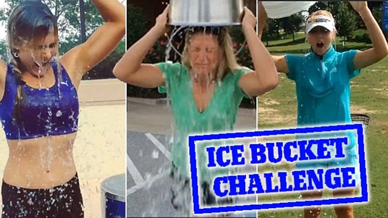
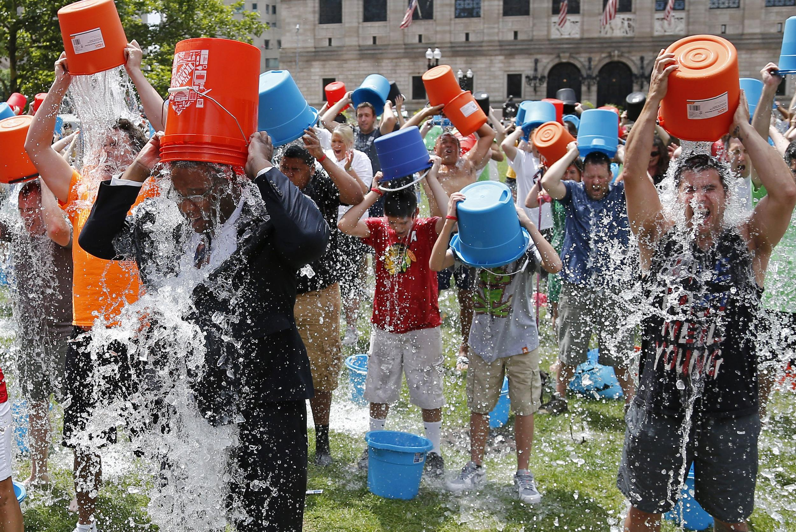
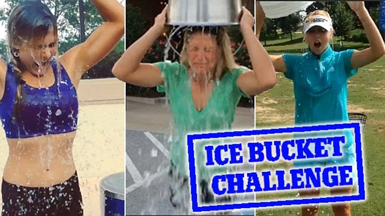
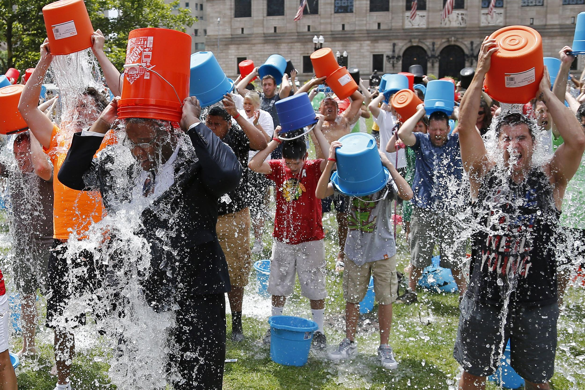

El Ice Bucket Challenge también llamado Desafío del balde de agua fría o Reto del cubo de agua helada (también puede ser agua con hielo), es una campaña publicitaria solidaria que intenta concientizar sobre una enfermedad llamada Esclerosis Lateral Amiotrófica (ELA, o ALS por sus siglas en inglés), enfermedad degenerativa progresiva que ataca las neuronas motoras.
Entre algunas personas que padecen esta enfermedad se encuentra por ejemplo el físico Stephen Hawking o los músicos Mike Porcaro y Jason Becker.
El dinero se recauda a beneficio como donación para la Asociación de Esclerosis Lateral Amiotrófica que estudia la enfermedad. La ALS Association es una organización sin fines de lucro que tiene como principal fin la protección y cuidado y sobre todo asistencia a las personas que padecen esta enfermedad, a través de una interconectada red que tiene como sede principal Estados Unidos, además de un programa de investigación que está por todo el mundo con la labor de descubrir tratamientos y una posible cura para la enfermedad.
Múltiples personalidades se han sumado al desafío para apoyar la causa y generar su aporte. Entre algunos, se destacan3 George W. Bush, Hilary Duff, Lionel Messi, Bill Gates, Taylor Swift, Niall Horan, Harry Styles, Liam Payne, Louis Tomlinson, Katy Perry, Neymar, Javier Hernandez Balcazar, Cristiano Ronaldo, Miguel Herrera, Migbelis Castellanos, Patricia Zavala, Lady Gaga, Shakira, Juanes, Demi Lovato, Fernando Gago, Teddy Robinson, Ashley Benson, Troian Bellisario, Keegan Allen, Lucy Hale, Sasha Pieterse, Ian Harding, Selena Gomez, Justin Bieber, Gabriela Isler, Josh Hutcherson, Leonardo Farkas, Mario Kreutzberger, Susana Gimenez, Scooter Braun, Carla Morrison, Jim Parsons, Calvin Harris, Skrillex, The Vamps, Iggy Azalea, Austin Mahone, Becky G, etc. El 8 de septiembre de 2014 Youtube anunció que el fenómeno pasó los mil millones de reproducciones, superando al Harlem Shake.
.jpg) 


